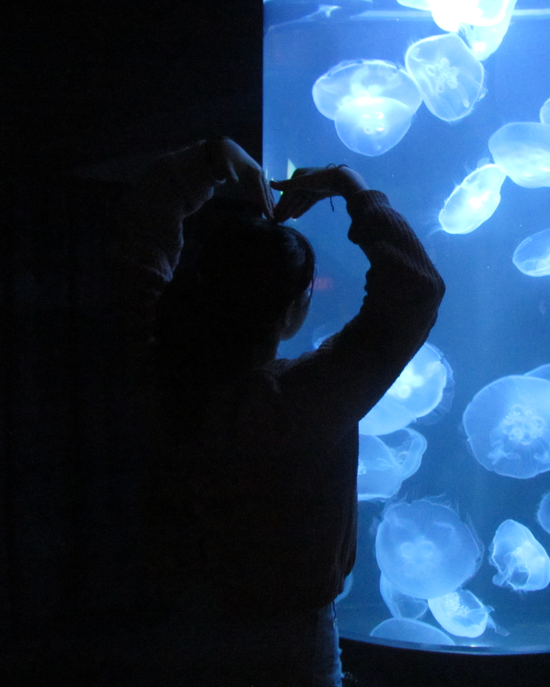
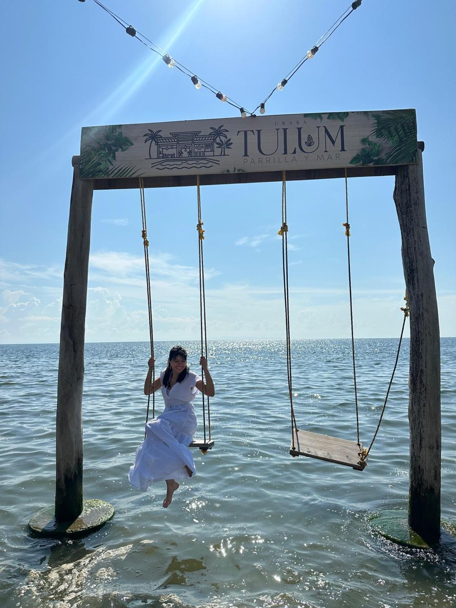
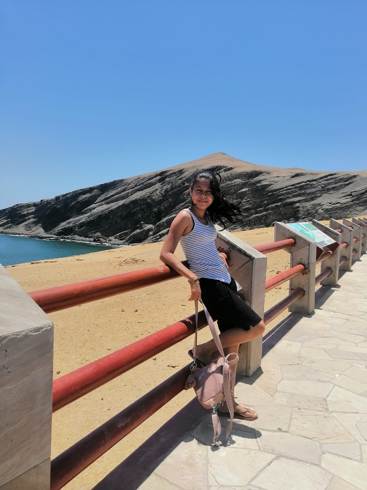

¿CUAL ES MI ANIMAL FAVORITO?
Son las medusas porque tienen una mezcla muy particular de cosas que encuentro fascinantes como que son tranquilas, pero también misteriosas,tienen una estética casi “etérea”, como algo entre océano y espacio y visualmente son hipnóticas: luz, movimiento fluido, transparencias, tonos azules y violetas eso hace que llamen mucho la atención son muy relajantes y esteticamente tienen buena presencia
¿POR QUÉ ME GUSTA VIAJAR?
Viajar para mí es una forma de sentir la vida de una manera diferente. Cada lugar tiene una historia única y su propia belleza. Creo que viajar no es solo conocer nuevos lugares, sino también conectar con nuevas culturas y aprender de ellas.


¿POR QUÉ ME GUSTA EL AZUL?
El azul siempre ha sido para mi uno de los mejores, porque transmite tranquilidad, profundidad y libertad. Me gustan las cosas que me dan serenidad y me relajan, como: el océano, las luces suaves, los paisajes nocturnos y todo aquello que logra sentirse tranquilo.
POEMA QUE A SURI LE GUSTA
Mi patria eran tus manos, tu mirada, el suave temblor de tus labios.
Ya no tengo tu hombro para mi cabeza rendida.
No tengo nada.
Veinte años de exilio, amor mio, Veinte años sin patria.
- Maruja Vieira